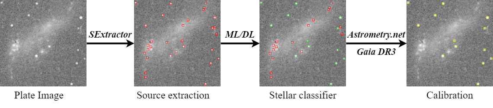
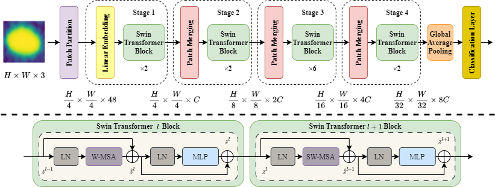

Enhancing astrometric registration of Chinese historical Astronomical Digital Plates with deep learning
Abstract
China has systematically collected nighttime astronomical plates since 1900, creating a large historical dataset that has been digitized with optical scanners. For astrometric registration of these digitized plates, sources were first extracted using SExtractor, and then matched astrometrically with Astrometry.net and the Gaia catalog. However, suboptimal early storage conditions and subsequent environmental deterioration have impeded accurate source matching, resulting in processing failures for several thousand digitized plates. In this work, we introduce a Transformer-based classification model that takes cutouts of SExtractor-detected sources as input and leverages multi-scale feature fusion to identify trustworthy stellar sources on the plates. Trained on plates with successful astrometric calibration, our AI-based classifier was then applied to SExtractor detected sources of 1883 digitized plates, enabling us to complete the astrometric registration for 1353 of them. This AI-augmented pipeline streamlines the processing of historical plate archives and enhances their scientific value for long-term time-domain astronomical studies.
Background & Motivation
Astronomical plates are some of the most significant observational tools of twentieth-century astronomy, offering long-term sky surveys that modern surveys cannot match. Since 1900, China has systematically gathered nighttime astronomical plates, building a substantial historical dataset. Although these fragile materials have been digitized with high accuracy, they need to be astrometrically registered by cross-matching detected stellar sources with modern reference catalogs such as Gaia to be scientifically useful.
Astrometric registration workflow
The astrometric registration of the digitized plates consists of three main steps: source extraction, stellar source classification, and astrometric matching.

As illustrated below, the matching process extracts bright sources to form triangular patterns, acting as geometric 'ciphers' to be cross-matched against modern star catalogs. Finding an exact match locks in the plate's precise coordinates. To ensure the success of this algorithm, our work focuses entirely on the vital preceding step: accurately classifying and distinguishing genuine stellar sources from plate artifacts.
Astronomical Digital Plate Image Calibration
Left (Raw Plate): The original historical digital plate. Right (DESI): Precisely locates genuine stellar sources for astrometric registration.Challenge
However, time has left its mark on these valuable records. Suboptimal early storage conditions and subsequent environmental deterioration have left many historical plates suffering from scratches, mold, emulsion degradation, and physical fractures. These defects severely complicate the reliable detection of genuine stellar sources, causing traditional computer software to fail during the astrometric matching process and resulting in thousands of uncalibrated plates.
Our work
In our work, we introduce a deep-learning-assisted framework to salvage heavily degraded astronomical plates. We developed a Transformer-based classification model that effectively learns to distinguish trustworthy stellar sources from spurious artifacts caused by dust or scratches. By training a base model and employing metadata-guided fine-tuning to adapt to specific observational conditions (such as different telescopes and exposure times), our AI-driven approach bypasses the limitations of traditional rules.

Quantitative Results
Our AI-augmented pipeline was applied to 1,883 digitized historical plates that had previously failed astrometric registration using traditional methods. The results demonstrate the exceptional resilience of our deep learning framework against environmental deterioration.
Through the combined use of our Base Model and metadata-guided Fine-Tuned Models, we successfully completed the astrometric registration for 1,353 of these challenging plates. Remarkably, the model maintained robust feature extraction even on severely degraded data, achieving success rates of nearly 68% for plates with visible mold, scratches, or minor detachment (Grade 2 and Grade 3 plates). The model demonstrates strong resilience against moderate physical defects.
(Failed by Traditional Methods)
by Our Framework
Severely Degraded Data
BibTeX
@article{YourPaperKey2026,
title={Enhancing astrometric registration of Chinese historical Astronomical Digital Plates with deep learning},
author={Quanfeng Xu, Zhengjun Shang, Shiyin Shen, Yong Yu, Meiting Yang, Hao Luo, Zhenghong Tang, Jing Yang, Jianhai Zhao},
journal={Research in Astronomy and Astrophysics},
year={2026},
url={https://your-domain.com/your-project-page}
}